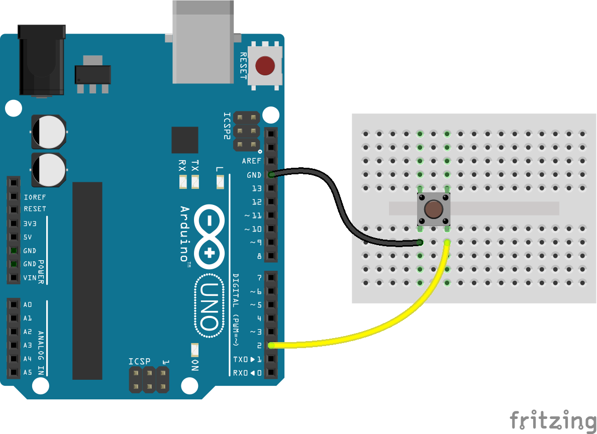

0. 今後のスケジュール（予定）
- 11/20：p5.jsの基礎、課題「センサーで模様を描く」制作
- 11/27：課題の試遊、p5.js の応用 ※授業見学
- 12/04：p5.js の応用
- 12/11：課題「オーディオビジュアライザー」制作
- 12/18：課題の試遊、p5.js の応用
- 01/15：p5.js の応用
- 01/22：最終課題「p5.js を使用した作品」制作
- 01/29：最終課題「p5.js を使用した作品」制作
- 02/05：課題の試遊、まとめと補足 ※時間が余ったら他授業の課題
Javaをベースに作られた「Processing」と言う電子アートのプログラミング言語をJavaScriptで使用できるようにしたライブラリ。
<!doctype html>
<html>
<head>
<meta charset="utf-8">
<title>p5.js</title>
<style>
canvas {
background: #ddd;
border: 1px solid #aaa;
}
</style>
</head>
<body>
<script src="https://cdn.jsdelivr.net/npm/p5@1.8.0/lib/p5.js"></script>
<script>
//ページ読み込み時に1度だけ実行される関数
function setup() {
//canvas要素の生成
createCanvas(640, 480);
}
//ページを表示している間、ずっと繰り返し実行される関数
function draw() {
console.log('draw!');
}
</script>
</body>
</html>//素のCanvasの場合
<body>
<canvas id='example' width='640' height='480'>
Canvas not supported.
</canvas>
<script>
let ctx;
window.addEventListener('load', () => {
init();
});
const init = () => {
const canvas = document.querySelector('#example');
if (!canvas || !canvas.getContext) {
return false;
}
ctx = canvas.getContext('2d');
requestAnimationFrame(update);
};
const update = () => {
requestAnimationFrame(update);
};
</script>
</body>
function setup() {
createCanvas(640, 480);
//点の描画：point( X座標, Y座標 );
point( 100, 200 );
//線の描画：line( X座標始点, Y座標始点, X座標終点, Y座標終点 );
line( 10, 10, 200, 180 );
//矩型の描画：rect( X座標, Y座標, 幅, 高さ );
rect( 10, 10, 200, 180 );
//楕円の描画：ellipse( X座標, Y座標, 幅, 高さ );
ellipse( 10, 10, 200, 180 );
}
function setup() {
createCanvas(640, 480);
//背景色
background(0, 0, 0);
//グレースケール（白〜黒）の場合は値1個に省略できる
//background(0);
//塗りの色
fill(255, 0, 0);
//線の色
stroke(0, 0, 255);
//16進数コードでもOK
//stroke("#0000ff");
ellipse( 10, 10, 200, 180 );
}function setup() {
createCanvas(640, 480);
//値を1個追加することで、透明度を設定できる
background(0, 200);
fill(255, 0, 0, 100);
ellipse( 10, 10, 200, 180 );
//16進数の書き方では無理っぽい
//stroke("#0000ff", 100);
}function setup() {
createCanvas(640, 480);
//カラーモードの変更：RGB、HSB、HSL
colorMode(HSL);
fill(180, 50, 50);
ellipse( 10, 10, 200, 180 );
//塗りなし
noFill();
ellipse(100, 100, 200, 180);
//線なし
noStroke();
fill(90, 50, 50);
ellipse(200, 200, 200, 180);
//線の太さ・形状
strokeCap(ROUND);
strokeWeight(6);
stroke(90, 50, 50);
line(300, 300, 400, 400);
}
function setup() {
createCanvas(640, 480);
strokeWeight(8);
//たまご
fill("#e7c5a8");
ellipse(320, 240, 100, 100);
//ちくわ
fill("#feecd3");
rect(250, 290, 140, 80);
//こんにゃく
fill("#838383");
triangle(320, 120, 250, 190, 390, 190);
//串
line(320, 370, 320, 420);
}function setup() {
createCanvas(640, 480);
strokeWeight(8);
//矩型の基準点を変更
rectMode(CENTER);
//たまご
fill("#e7c5a8");
ellipse(320, 240, 100, 100);
//ちくわ
fill("#feecd3");
//rect(250, 290, 140, 80);
rect(320, 330, 140, 80);
//こんにゃく
fill("#838383");
triangle(320, 120, 250, 190, 390, 190);
//串
line(320, 370, 320, 420);
}
let x = 0;
function setup() {
createCanvas(640, 480);
rectMode(CENTER);
}
function draw() {
x++;
rect(x, 25, 50, 50);
}let x = 0;
function setup() {
createCanvas(640, 480);
rectMode(CENTER);
}
function draw() {
//描画したモノを削除
clear();
x++;
rect(x, 25, 50, 50);
}//オブジェクトの形に変更
let obj = {
x: 0,
y: 0
};
function setup() {
createCanvas(640, 480);
rectMode(CENTER);
}
function draw() {
clear();
obj.x++;
//ランダムな値を取得
obj.y = floor(random(25, 50));
//JavaScriptの書き方でもOK
//obj.y = Math.floor(Math.random() * 25) + 25;
rect(obj.x, obj.y, 50, 50);
}
//色のキーを追加
let obj = {
x: 0,
y: 0,
c: 0
};
function setup() {
createCanvas(640, 480);
rectMode(CENTER);
//カラーモードと線なしの設定
colorMode(HSL);
noStroke();
}
function draw() {
//描画を削除しない
// clear();
obj.x = Math.floor(Math.random() * 640);
obj.y = Math.floor(Math.random() * 480);
//ランダムな値を追加
obj.c = Math.floor(Math.random() * 100);
//HSLの場合は、透明度0〜1
fill(180, 50, obj.c, 0.5);
rect(obj.x, obj.y, 50, 50);
}
//角度と拡大率のキーを追加
let obj = {
x: 0,
y: 0,
c: 0,
r: 0,
s: 0,
};
function setup() {
createCanvas(640, 480);
rectMode(CENTER);
colorMode(HSL);
noStroke();
}
function draw() {
// clear();
obj.x = Math.floor(Math.random() * 640);
obj.y = Math.floor(Math.random() * 480);
obj.c = Math.floor(Math.random() * 100);
//ランダムな値を追加
obj.r = Math.floor(Math.random() * 360);
obj.s = Math.random() * 2 + 0.5;
//座標空間を保存
push();
//移動、回転、拡大縮小
translate(obj.x, obj.y);
rotate(obj.r);
scale(obj.s);
fill(180, 50, obj.c, 0.5);
//x座標とy座標を修正
rect(0, 0, 50, 50);
//保存した状態に戻す
pop();
}以下のサンプルをできる限り再現してください。
p5.jsには独自のシステム変数がある。これはp5.jsが自動的に値を設定するもので、プログラム内では同じ名前の変数を使ってはいけない。
function setup() {
createCanvas(640, 480);
//width：canvas描画領域の幅
//height：canvas描画領域の高さ
console.log(width);
console.log(height);
}
function draw() {
//mouseX：ブラウザ内のマウスのX座標
//mouseY：ブラウザ内のマウスのY座標
console.log(mouseX);
console.log(mouseY);
}
function setup() {
createCanvas(640, 480);
// noStroke();
// fill(0);
}
function draw() {
line(mouseX, mouseY, pmouseX, pmouseY);
}function setup() {
createCanvas(640, 480);
// noStroke();
// fill(0);
}
function draw() {
if(mouseIsPressed){
line(mouseX, mouseY, pmouseX, pmouseY);
}
}p5.jsには独自のシステム関数がある。これはp5.jsが自動的に動作を設定するもので、プログラム内では同じ名前の変数を使ってはいけない。
function setup() {
createCanvas(640, 480);
}
function draw() {
}
function mousePressed() {
console.log("press");
}
function mouseReleased() {
console.log("release");
}
function keyPressed() {
//システム変数「key」：押されたキーボードの値
console.log(key);
}
function keyReleased() {
//システム変数「keyCode」：押されたキーボードのキーコード値
console.log(keyCode);
}function setup() {
createCanvas(640, 480);
}
function draw() {
if (mouseIsPressed) {
line(mouseX, mouseY, pmouseX, pmouseY);
}
}
function keyReleased() {
if (keyCode === 32) {
clear();
}
}function setup() {
createCanvas(640, 480);
colorMode(HSL);
strokeWeight(6);
strokeCap(ROUND);
}
function draw() {
if (mouseIsPressed) {
let d = dist(mouseX, mouseY, pmouseX, pmouseY);
let w = map(d, 0, 100, 6, 20);
strokeWeight(w);
line(mouseX, mouseY, pmouseX, pmouseY);
}
}
function keyReleased() {
if (keyCode === 32) {
clear();
}
}

npm init -ynpm install socket.io johnny-fivetouch app.js/* app.js */
const fs = require('fs');
const http = require('http');
const hostname = '127.0.0.1';
const port = 3000;
const index = fs.readFileSync('./index.html', 'utf-8');
const server = http.createServer((req, res) => {
res.writeHead(200, {
'Content-type': 'text/html'
});
res.end(index);
});
const five = require('johnny-five');
const board = new five.Board();
board.on("ready", () => {
console.log("Arduino ready!");
//ボタンの設定
const button = new five.Button({
pin: 2,
isPullup: true
});
//センサーの設定
let sensor_value = 0;
const sensor = new five.Sensor({
pin: "A0",
freq: 30
});
server.listen(port, hostname, () => {
console.log(`Server running at http://${hostname}:${port}/`);
const io = require("socket.io")(server);
io.on("connection", (socket) => {
console.log(`Connection completed!`);
//センサーの値を変数に代入
sensor.on("change", () => {
sensor_value = sensor.value;
});
//ボタンが押されている時の動作
button.on("hold", function () {
io.emit('button_value', {
sensor: sensor_value,
button: 'hold'
});
});
//ボタンを離した時の動作
button.on("release", function () {
io.emit('button_value', {
sensor: sensor_value,
button: 'release'
});
});
});
});
});touch index.html<!-- index.html -->
<!DOCTYPE html>
<html lang="ja">
<head>
<meta charset="UTF-8">
<meta name="viewport" content="width=device-width, initial-scale=1.0">
<title>課題「模様を描画」</title>
</head>
<body>
<!-- socket.io CDN -->
<script src="https://cdn.socket.io/4.6.0/socket.io.min.js" crossorigin="anonymous"></script>
<!-- p5.js CDN -->
<script src="https://cdn.jsdelivr.net/npm/p5@1.8.0/lib/p5.js"></script>
<script>
const socket = io();
let sensor_value = 0;
let button_value = 'release';
socket.on('button_value', (recieve) => {
sensor_value = recieve.sensor;
button_value = recieve.button;
});
function setup() {
createCanvas(640, 480);
colorMode(HSL);
rectMode(CENTER);
}
function draw() {
if (button_value == 'hold') {
//模様を描く
} else {
clear();
}
}
</script>
</body>
</html>